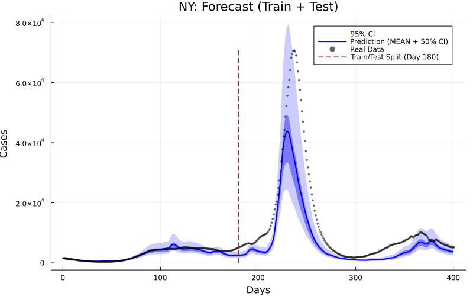
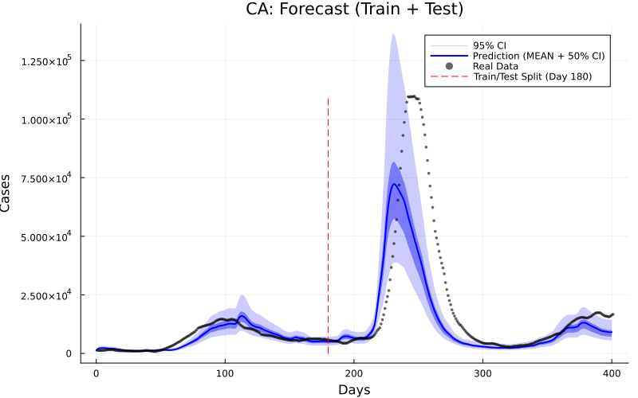
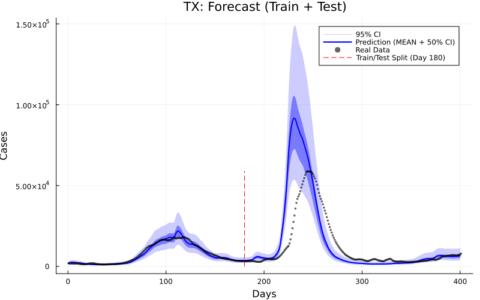
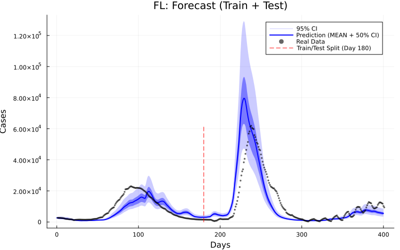
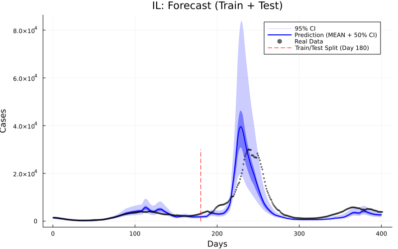
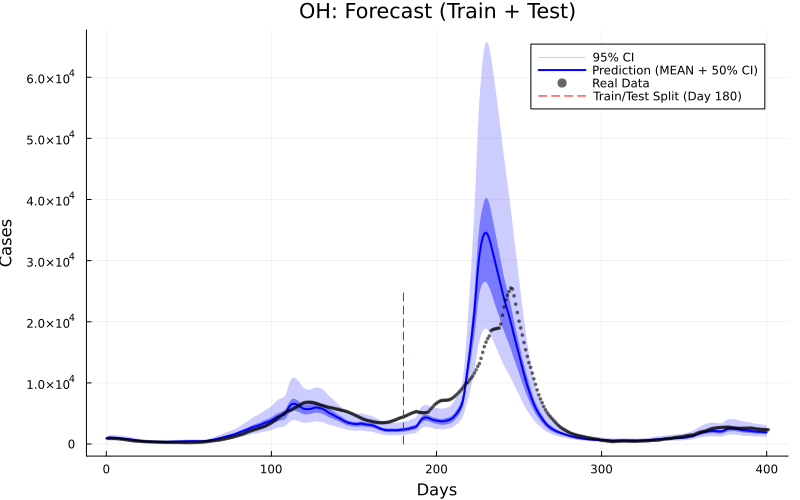
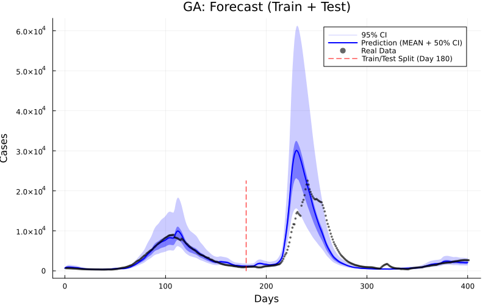
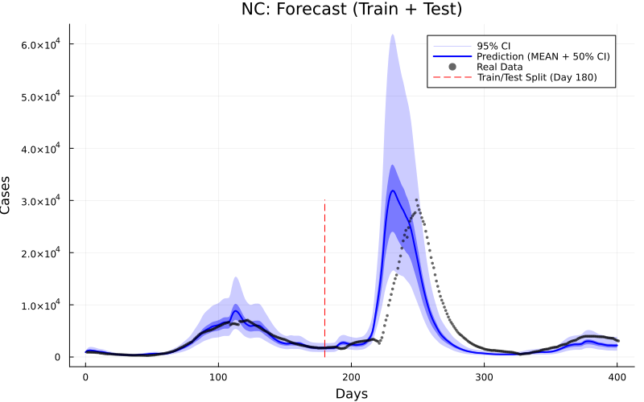
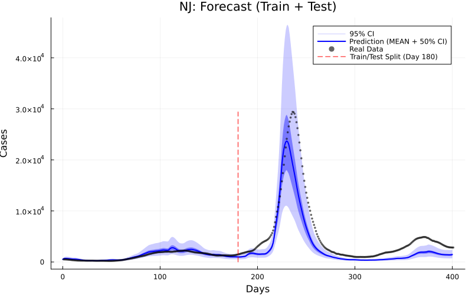
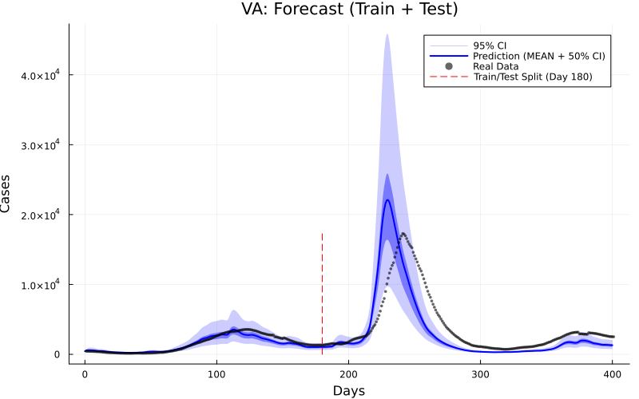

Red Line (Day 180): Separates Training (Left) from Test/Future (Right).
Dark Blue Band (50% CI): Interquartile Range (25% - 75%). Represents the most likely outcome (half of all simulations fell here).
Light Blue Band (95% CI): Extreme Range (2.5% - 97.5%). Covers rare or extreme events (best for safety/coverage).
Analysis: A wide light band with a narrow dark band means the model is generally confident but allows for low-probability extreme outliers.









